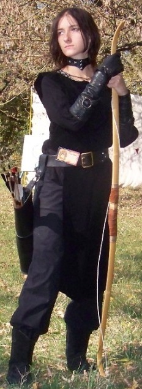

Личная страница Умбры
Статус: Куэнар
Любимое оружие:
Lukbis Diana
История Умбры
Умбра родилась в Вэльдрине. Отец девочки был торговцем, а мать унаследовала от предков искусство мага-целителя. В силу своей профессии отец часто и надолго покидал королевство, поэтому воспитанием Умбры занялась мать. С того момента, как Умбра научилась говорить, мать, наряду с другими предметами, стала обучать ее искусству магии. Но Умбра не любила учиться, всячески увиливая от занятий. Чаще всего она сбегала в лес, где могла провести целый день, наблюдая за жизнью муравейника, выслеживая лесных зверей или просто сидя на ветке дерева.
Со временем, несмотря на всю свою нелюбовь к занятиям, Умбра многому научилась. Она умела стрелять из лука, сносно рисовала, немного обучилась целительству и даже знала несколько простейших заклинаний иллюзии, которые поведал ей гном Эркки Златобрад, старый друг отца. Однако своего призвания ни в одном из дел, за которые она бралась, Умбра так и не нашла.
Так все и шло до совершеннолетия юной дроу. Тогда ее отец, по настоянию девушки, взял ее с собой за пределы Вэльдрина. Много месяцев провела умбра с караваном, посетив королевства светлых эльфов, гномов, вольные города людей.
Преодолев пол континента и дойдя до Туршима, торговцы, наконец, двинулись в обратный путь в Вэльдрин. В тот день караван шел через Танцующие Горы. Умбра ехала в самом хвосте каравана. Внезапно она услышала странный звук, доносившийся как будто из-за горы. Она обернулась, но никто из ее попутчиков, казалось, ничего не слышал. А звук становился все громче и громче. Умбра остановила коня и вдруг ясно поняла, что это крик о помощи. Она не знала, кто конкретно ее звал, но что-то внутри нее говорило, что надо срочно спасать зовущего. Умбра резко дернула скакуна и, свернув с тракта, помчалась на звук. Зов вел и направлял ее, и девушки ни секунды не сомневалась в выбранном пути. Через какое-то время Умбра вылетела на равнину и увидела того, кто ее звал. Это было странное большое создание с верхним туловищем человека на широких плечах льва, темно-золотой мех покрывал все тело целиком, а лицо сочетало в себе львиные и человеческие черты. Рядом с ним девушка увидела еще одно такое же существо поменьше. Девушка вспомнила – на местном диалекте существ называли вемиками. Зверолюди были окружены дюжиной разъяренных гоблинов-багбиров. Не долго думая она схватила свой лук и выпустила в гоблина стрелу. Потом еще и еще одну. Вряд ли она смогла кого-то убить, хотя несколько багбиров получили явно серьезные раны, но ей удалось их отвлечь. Трое нападавших, размахивая оружием, побежали к дроу. Двоих она подстрелила, но третий, громко закричав, кинул в нее палицей. Целившаяся в это время Умбра не успела увернуться, и дубина попала ей прямо в голову.
Когда девушка очнулась, она обнаружила, что лежит на деревянном настиле в небольшом помещении. А рядом с ней находился тот самый вемик, чей призыв она слышала. На ломаном общем он рассказал, что после того, как Умбру ранили, охотникам пришла помощь из их родного селения, где сейчас и находилась девушка; зов, который она слышала, вемики называли криком жизни. Однако услышать его могли лишь отмеченные Сильвенусом – богом всего живого, которому поклонялись зверолюди.
В селении Умбра провела несколько недель, пока полностью не поправилась. Четверо воинов-вемиков, отправившихся на поиски каравана, чтобы рассказать о ее судьбе отцу, вернулись ни с чем, так и не найдя торговцев. Тогда дроу решила ехать в Вэльдрин сама. Вемики провели девушку до самой границы Сияющих Равнин, после чего Умбра продолжила путь в одиночестве.
В пути ей приходилось встречаться с хищными зверями, разбойниками и различными злобными обитателями Фаеруна. Тогда Умбру спасал ее верный лук, хотя чаще – умение прятаться и убегать. Однажды, когда девушка проезжала через Высоколесье, на нее напала разбойничья шайка гнолов. Оценив явный численный перевес противника, она попыталась скрыться. Ей удалось оторваться от преследователей, но внезапно удача оставила Умбру – конь вынес ее прямо к глубокому оврагу. Бой был бы не равным, и дроу понимала, что больших шансов у нее нет. Оказавшись в безвыходной ситуации, она вновь вспомнила тот зов, который свел ее с вемиками. Повинуясь внезапному порыву, Умбра попросила о помощи Сильвенуса и позвала, стараясь вложить в свой негромкий голос всю жажду жизни. Когда гнолы появились из-за деревьев, завязался бой. Девушку быстро оттеснили к самому краю пропасти. И тут из леса раздался разъяренный рев, и на прогалину вылетел огромный седой медведь. Рыча, он кинулся на разбойников, сшибая их и отбрасывая когтистыми лапами. Очень быстро все закончилось, и на опустевшей поляне остались только Умбра и медведь. Он пристально посмотрел на дроу, а потом приподнялся, и девушка с удивлением поняла, что перед ней стоит уже не зверь, а человек – седой крупный старик, одетый в длинное широкое одеяние.
Ислек Лурт, так звали человека, оказался друидом. Умбра поведала ему свою историю, и тогда старик предложил девушке отсрочить ее возвращение домой, и пойти к нему в ученицы. После недолгих раздумий Умбра согласилась.
Ислек жил в красивом месте на берегу Пути Единорога. В его небольшом доме нашлось место и для дроу. В первый раз Умбра получала настоящую радость от новых знаний. Однако из-за неусидчивости девушки, многие навыки, требующие сосредоточения, ей не давались. Это крайне раздражало ее и без того сварливого учителя.
Как-то раз, сидя в доме и читая одну из книг Ислека, девушка наткнулась на изображение рыси болотного пламени. Заостренные уши с темными кисточками на концах были насторожено приподняты. Тело рыси было покрыто мягким, длинным и густым мехом пепельно-голубого цвета. Девушка проговорила слова превращения, которые нашла в книге, и зажмурилась. Однако, открыв глаза, она поняла, что ничего в ее облике не изменилось. Умбра была несколько разочарована, но быстро забыла о неудаче. Вечером вернулся учитель. Он некоторое время рассматривал девушку, после чего зашелся своим громким рычащим смехом. Умбра недоуменно оглядела себя, а потом подошла к зеркалу. Каково же было ее удивление, когда вместо своих маленьких заостренных ушек она обнаружила пару длинных и поросших шерстью рысьих ушей. Девушка быстро пробормотала слова обратного превращения, но ничего не произошло. Она пробовала еще и еще раз, но уши оставались на месте. Тогда она попросила учителя, который обычно помогал ей, если что-то шло наперекосяк. На этот раз учитель согласился лишь отчасти. С ушей Умбры исчезла белесая шерсть, но прежний размер к ним так и не вернулся. Посмеиваясь, Ислек объяснил девушке, что она должна сама вернуть себе свой истинный вид.
С этого момента большую часть времени Умбра отдавала постижению пути друида и мало что могло ее отвлечь. Она научилась призывать животных и насекомых, ускорять рост и изменять растения, оборачиваться в лесную кошку и вермлинга, однако каждый раз вновь становясь дроу, ее уши все так же были удлинены. Постепенно она привыкла и перестала обращать на это внимание.
Так прошло несколько лет. Однажды, возвращаясь домой в облике рыси, уставшая девушка внезапно почувствовала как на ее задней лапе затягивается веревочная петля. Не ожидавшая ловушки Умбра оказалась вздернутой под раскидистое дерево. То ли из-за крайне неудобной позы – девушка повисла вниз головой, – толи просто потому что была удивлена, она некоторое время не могла превратиться в человека. Через некоторое время кусты зашуршали и девушка увидела подходящего к ней незнакомца. Одного взгляда на его темное лицо хватило, чтобы к девушке вернулось все ее самообладание. Ей наконец удалось вернуть свой истинный облик. Незнакомец оказался дроу, он пытался что-то сказать Умбре, но та, извернувшись, освободилась из ловушки и разозленная скрылась в лесу. Весь день она незаметно следила за пришельцем. Девушке было сложно судить о его намерениях и поэтому вечером, вернувшись домой, она рассказала обо всем Ислеку. Учитель нахмурился и промолчал, а ночью, лежа в постели без сна, она услышала как старик, превратившись в медведя, покинул дом. Девушка с трудом поборола любопытство, которое подбивало ее кинутся следом. Зная своего учителя, Умбра подозревала, что из этого все равно ничего хорошего бы не вышло.
На следующее утро Ислек объявил, что пришлого дроу опасаться не стоит, невзначай отметив, что похоже вчера кроме его беспечной ученицы в ловушки незнакомца так никто и не попал. На подначку наставника Умбра не обратила внимания, но уходя в лес прихватила с собой тушку пойманного накануне зайцекролика.
Найти полянку, на которой ночевал дроу, было делом не хитрым. Когда Умбра подошла, мужчина даже не проснулся. Он не был похож на виденных ею раньше дроу – этот разумный был массивнее, в лице проглядывали человеческие черты. Но в его жилах определенно текла кровь ее расы. Пробудив нехитрым заклинанием едва тлеющий огонек ночного костра, она принялась готовить зверька.
Через некоторое время мужчина проснулся. Разделив с ним свой завтрак в знак добрых намерений, Умбра стала расспрашивать дроу о его пути. Мужчину звали Нимнар. Уроженец далекого Дамбрата, он уже несколько лет шел на север, ведомый рассказами о королевстве Вэльдрин, отринувшим веру жестокой богини. Случайная встреча всколыхнула в девушке воспоминания о доме, возвращение в который она постоянно откладывала на потом. Узнав же о цели путешествия Нимнара, Умбра поняла, что пришло время возвращаться на родину. Она решила идти вместе с дроу.
Умбра попрощалась с учителем, не сильно удивившимся решению ученицы, и, собрав вещи, отправилась в Вэльдрин.
Не раз за время своего путешествия им приходилось попадать в неприятности, но Нимнар Гур, оказавшийся смелым воином и надежным товарищем, всегда был рядом. Совместный путь сблизил обоих и в Вэльдрин они пришли, будучи уже близкими друзьями.
Радость от встречи с родными была велика, однако она уже точно знала, что мирная жизнь и судьба торговца – это не ее путь. Ее талант друида и умение стрелять из лука нашли свое применение в отряде горных рейнджеров Вэльдрина.